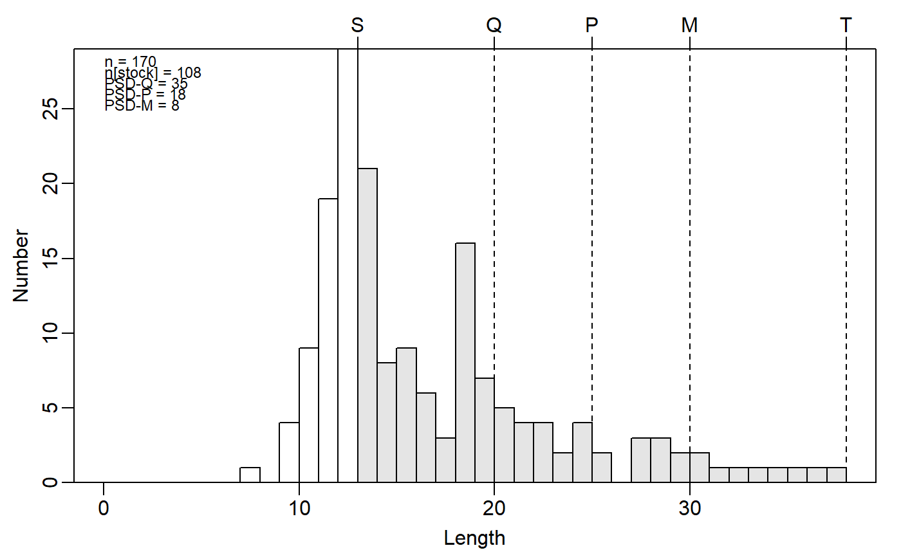
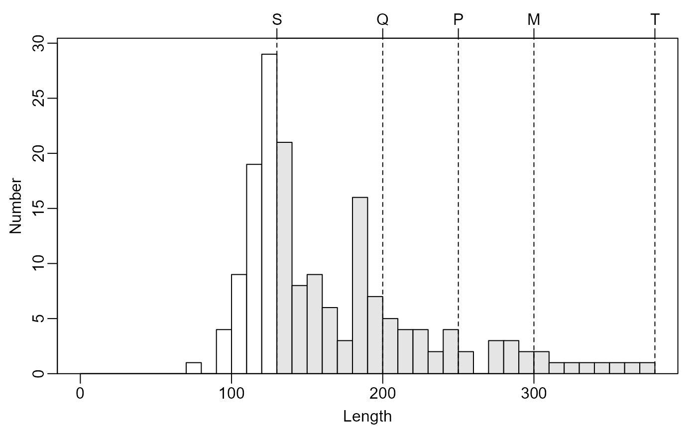
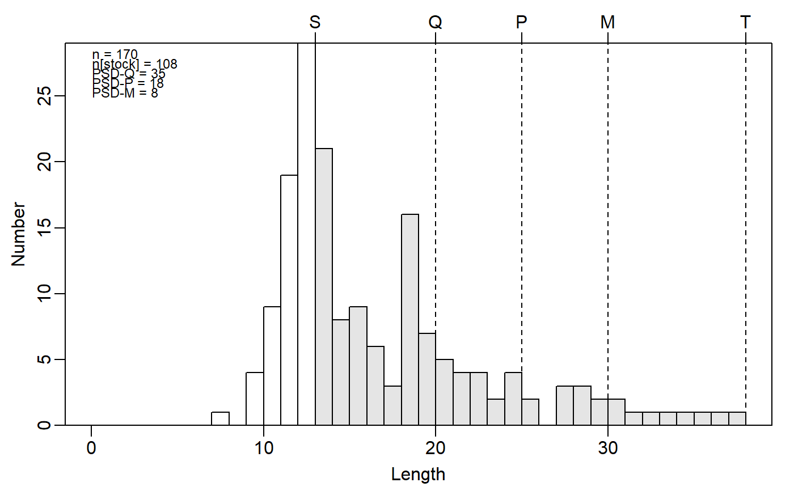
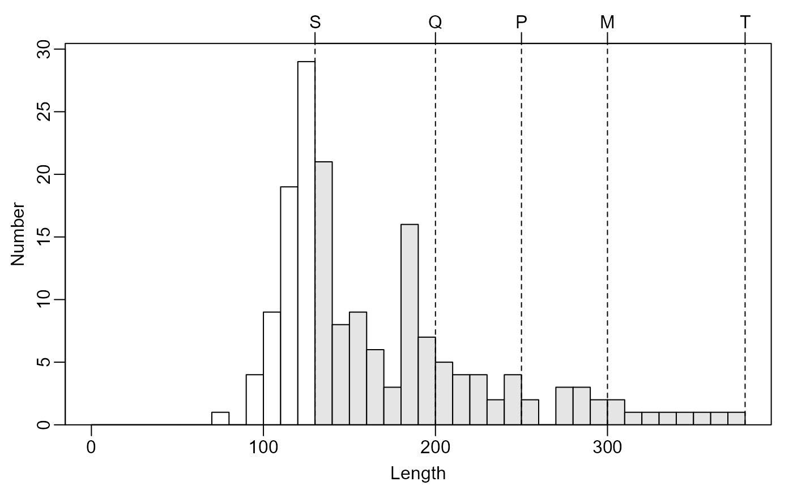

Constructs a length-frequency histogram with Gabelhouse lengths highlighted.
Usage
psdPlot(
formula,
data,
species = "List",
units = c("mm", "cm", "in"),
startcat = 0,
w = 1,
justPSDQ = FALSE,
main = "",
xlab = "Length",
ylab = "Number",
xlim = NULL,
ylim = c(0, max(h$counts) * 1.05),
substock.col = "white",
stock.col = "gray90",
psd.col = "black",
psd.lty = 2,
psd.lwd = 1,
show.abbrevs = TRUE,
psd.add = TRUE,
psd.pos = "topleft",
psd.cex = 0.75,
...
)Arguments
- formula
A formula of the form
~lengthwhere “length” generically represents a variable indatathat contains length measurements. Note that this formula can only contain one variable.- data
A data.frame that minimally contains the length measurements given in the variable in the
formula.- species
A string that contains the species name for which Gabelhouse length categories exist. See
psdValfor details.- units
A string that indicates the type of units used for the length measurements. Choices are
mmfor millimeters (DEFAULT),cmfor centimeters, andinfor inches.- startcat
A number that indicates the beginning of the first length-class.
- w
A number that indicates the width of length classes to create.
- justPSDQ
A logical that indicates whether just stock and quality (for PSD-Q calculations) categories should be used. If
FALSE(default) then the five Gabelhouse categories will be used.- main
A string that serves as the main label for the histogram.
- xlab
A string that serves as the label for the x-axis.
- ylab
A string that serves as the label for the y-axis.
- xlim
A numeric vector of length two that indicates the minimum and maximum values (i.e., fish lengths) for the x-axis.
- ylim
A numeric vector of length two that indicates the minimum and maximum values for the y-axis.
- substock.col
A string that indicates the color to use for the bars representing under-stock size fish.
- stock.col
A string that indicates the color to use for the bars representing stock size fish.
- psd.col
A string that indicates the color to use for the vertical lines at the Gabelhouse length category values.
- psd.lty
A numeric that indicates the line type to use for the vertical lines at the Gabelhouse length category values.
- psd.lwd
A numeric that indicates the line width to use for the vertical lines at the Gabelhouse length category values.
- show.abbrevs
A logical that indicates if the abbreviations for the Gabelhouse length categories should be added to the top of the plot.
- psd.add
A logical that indicates if the calculated PSD values should be added to the plot (default is
TRUE).- psd.pos
A string that indicates the position for where the PSD values will be shown. See details in
legend.- psd.cex
A numeric value that indicates the character expansion for the PSD values text.
- ...
Arguments to be passed to the low-level plotting functions.
Details
Constructs a length-frequency histogram with the stock-sized fish highlighted, the Gabelhouse lengths marked by vertical lines, and the (traditional) PSD-X values superimposed.
The length of fish plotted on the x-axis can be controlled with xlim, however, the minimum value in xlim must be less than the stock length for that species.
References
Ogle, D.H. 2016. Introductory Fisheries Analyses with R. Chapman & Hall/CRC, Boca Raton, FL.
Guy, C.S., R.M. Neumann, and D.W. Willis. 2006. New terminology for proportional stock density (PSD) and relative stock density (RSD): proportional size structure (PSS). Fisheries 31:86-87. [Was (is?) from http://pubstorage.sdstate.edu/wfs/415-F.pdf.]
Guy, C.S., R.M. Neumann, D.W. Willis, and R.O. Anderson. 2006. Proportional size distribution (PSD): A further refinement of population size structure index terminology. Fisheries 32:348. [Was (is?) from http://pubstorage.sdstate.edu/wfs/450-F.pdf.]
Willis, D.W., B.R. Murphy, and C.S. Guy. 1993. Stock density indices: development, use, and limitations. Reviews in Fisheries Science 1:203-222. [Was (is?) from http://web1.cnre.vt.edu/murphybr/web/Readings/Willis%20et%20al.pdf.]
Author
Derek H. Ogle, DerekOgle51@gmail.com
Examples
## Random length data
# suppose this is yellow perch to the nearest mm
df <- data.frame(spec=rep("Yellow Perch",170),
mm=c(rnorm(100,mean=125,sd=15),rnorm(50,mean=200,sd=25),
rnorm(20,mean=300,sd=40)))
## Example graphics
op <- par(mar=c(3,3,2,1),mgp=c(1.7,0.5,0))
# Using 10-mm increments
psdPlot(~mm,data=df,species="Yellow perch",w=10)
 psdPlot(~mm,data=df,species="Yellow perch",w=10,substock.col="gray90",
stock.col="gray30")

# ... but without the PSD values
psdPlot(~mm,data=df,species="Yellow perch",w=10,psd.add=FALSE)

par(op)
psdPlot(~mm,data=df,species="Yellow perch",w=10,substock.col="gray90",
stock.col="gray30")

# ... but without the PSD values
psdPlot(~mm,data=df,species="Yellow perch",w=10,psd.add=FALSE)

par(op)